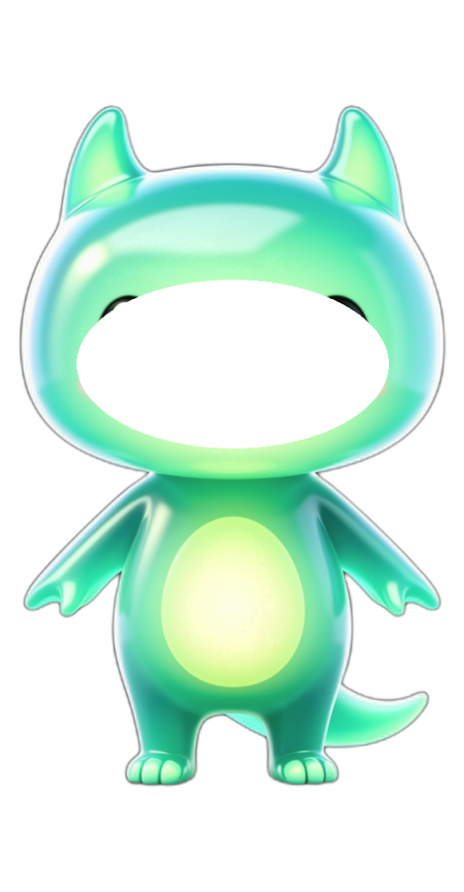
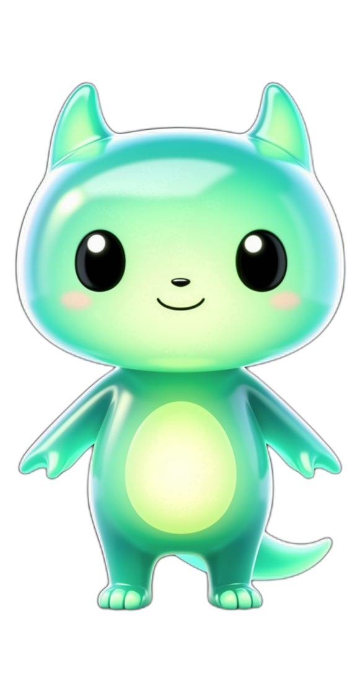
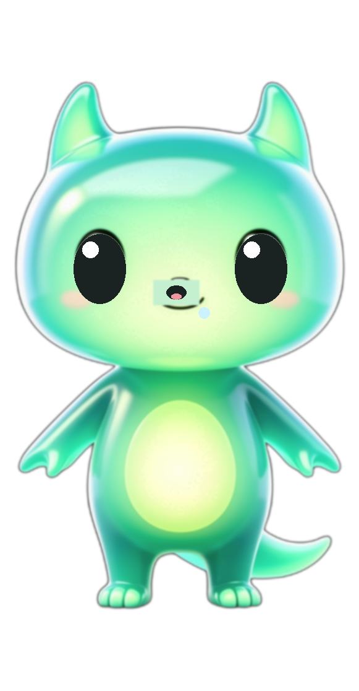
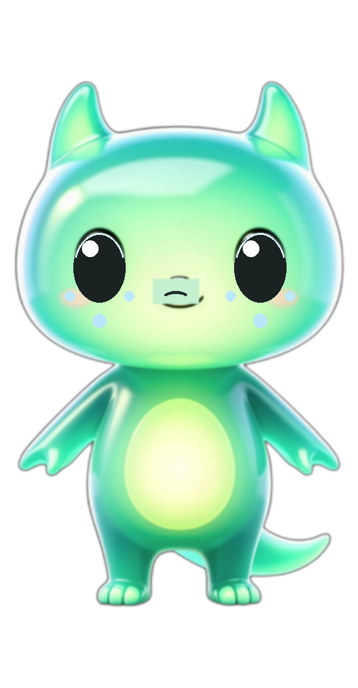
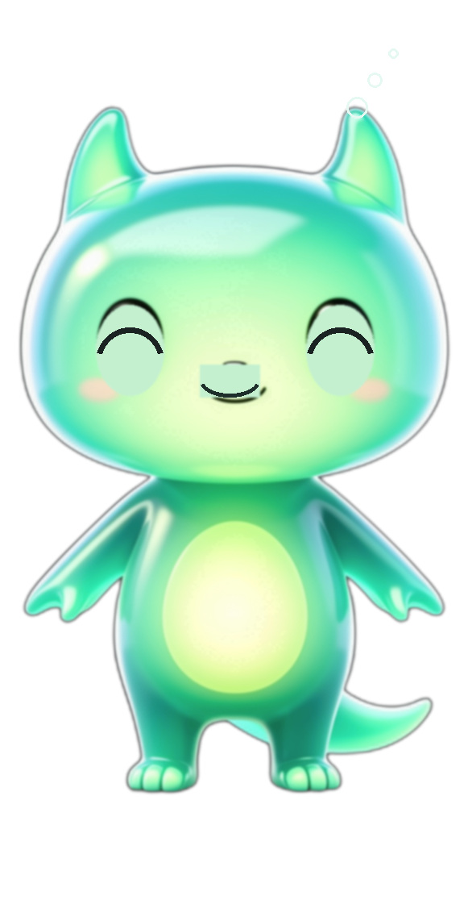

用分层素材在浏览器里跑的手感原型：身体层负责呼吸与挤压，眼睛层负责眨眼与情绪，光核层负责发光脉冲。 左侧每个按钮都能单独触发，右侧参数就是交给 Flutter 实现的规格。





| 动效 | 时长 | 幅度 / 曲线 |
|---|---|---|
| 呼吸 | 2.6s 循环 | 位移 ±2.2px、缩放 1→0.992，easeInOut |
| 眨眼 | 140ms | 眼睛层透明度 1→0→1，间隔 3~6s 随机 |
| 戳一下 | 380ms | 缩放 1.07/0.94 → 0.96/1.05 → 1，easeOutBack |
| 情绪切换 | 300ms | 两图层交叉淡入，easeInOut |
| 光核脉冲 | 2.6s 循环 | 透明度 0.45→0.9、缩放 0.94→1.06，与呼吸同相位 |
| 睡姿 | 6s 循环 | 周期放慢 + 饱和度 0.5 + 亮度 0.86 |